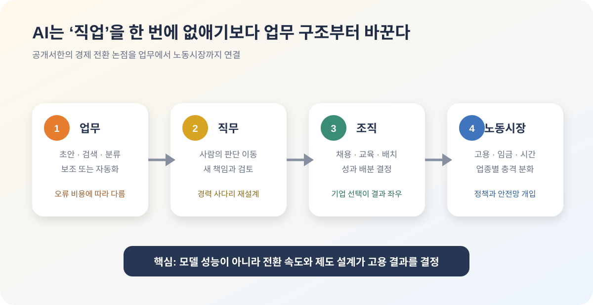

AI 일자리 경고가 다시 커졌다: 문제는 기술보다 전환 속도다
AI가 일자리에 미칠 영향을 두고 다시 큰 경고가 나왔다. 경제학자와 AI 연구자, 기술 업계 인사들이 공개서한을 통해 정부와 기업이 더 빠르게 대비해야 한다고 촉구했다. 이 뉴스의 핵심은 “AI가 사람을 대체한다”는 단순한 문장이 아니다. 더 중요한 질문은 일의 구조가 바뀌는 속도를 사회와 기업이 따라갈 수 있느냐다.
핵심 요약
AI 논쟁이 성능에서 일자리와 분배 문제로 옮겨가고 있다
AP는 2026년 7월 13일 Stanford Digital Economy Lab이 주도한 공개서한에 200명 이상의 경제학자, AI 연구자, 기술 업계 인사가 이름을 올렸다고 보도했다. Business Insider도 같은 날 Eric Schmidt, Reid Hoffman, Joseph Stiglitz, Daron Acemoglu, Simon Johnson 등 주요 서명자를 다뤘다. 서한의 메시지는 AI가 앞으로 10년 안에 훨씬 강력해질 수 있으며, 그 변화가 산업혁명보다 훨씬 짧은 시간 안에 경제를 흔들 수 있다는 것이다.

공개서한이 실제로 말한 것과 말하지 않은 것
‘We Must Act Now’ 서한은 길고 세부적인 정책 보고서가 아니다. AI가 앞으로 10년 동안 훨씬 강력해질 수 있고, 산업혁명보다 짧은 시간에 큰 경제적 기회와 대규모 일자리 이동 위험을 함께 만들 수 있으니 지금부터 그 영향을 이해하고 준비하자는 짧은 공동선언에 가깝다. 구체적인 실업률이나 사라질 직업 수를 예측하지 않는다.
AP는 서명자가 200명을 넘고 노벨 경제학상 수상자 16명이 포함됐다고 보도했다. Erik Brynjolfsson이 속한 Stanford Digital Economy Lab이 조직했으며 Joseph Stiglitz, Daron Acemoglu, Simon Johnson 같은 경제학자와 기술 업계 인사들이 참여했다. 이름의 무게는 크지만, 서명자 모두가 AI의 속도나 최적 정책에 같은 의견을 갖는다는 뜻은 아니다.
따라서 이 서한을 ‘전문가들이 대량 실업을 확정했다’고 읽으면 틀린다. 더 정확한 해석은 전망의 불확실성이 크더라도 충격의 규모와 속도가 클 수 있으므로 노동 통계, 교육, 안전망과 기업 책임을 사전에 준비하자는 합의다. 경고의 대상은 AI 자체보다 준비되지 않은 제도다.
직업보다 먼저 변하는 것은 업무 묶음이다
한 직업은 여러 업무로 구성된다. 회계사는 자료 수집, 분류, 계산, 고객 설명, 규정 판단을 하고 개발자는 요구사항 분석, 코드 작성, 테스트, 리뷰, 운영 대응을 한다. AI는 이 직업 전체를 한 번에 없애기보다 문서 초안·코드 생성·검색·분류 같은 일부 업무의 시간과 비용부터 낮춘다.
자동화 가능한 업무 비중이 커져도 고용 결과는 하나로 정해지지 않는다. 같은 인원으로 더 많은 일을 처리해 채용이 줄 수 있고, 서비스 가격이 내려가 수요가 늘면서 고용이 유지될 수도 있다. 품질 검증과 고객 대응, AI 운영처럼 새 업무가 생길 가능성도 있다. 기술의 기능만으로 순고용 효과를 계산하기 어려운 이유다.
현장에서는 ‘대체’와 ‘보조’가 동시에 일어난다. 정형화된 초안은 AI가 만들고 사람은 예외와 책임 판단을 맡는 조직도 있고, 산출물 전체를 AI가 만들고 소수 전문가만 표본 검사하는 조직도 있다. 어느 방식이 자리 잡는지는 오류 비용, 규제, 고객 신뢰와 기업의 조직 설계에 달려 있다.
가장 먼저 흔들릴 수 있는 곳은 경력 사다리다
주니어 직원은 자료 정리, 기본 코드, 문서 초안처럼 AI가 잘하는 업무를 통해 직무를 배운다. 기업이 이 업무를 곧바로 자동화하고 신입 채용을 줄이면 단기 비용은 낮아지지만 몇 년 뒤 숙련된 중간 관리자와 전문가가 부족해질 수 있다. AI 도입이 인력 계획과 교육 계획을 함께 바꿔야 하는 이유다.
해법은 주니어를 없애는 것이 아니라 학습 업무를 다시 만드는 것이다. AI가 만든 결과의 오류 찾기, 고객 맥락 확인, 테스트 설계, 현장 인터뷰와 데이터 품질 점검을 초기 경력의 핵심으로 바꿀 수 있다. 다만 사람에게 검토 책임만 주고 판단 권한과 충분한 시간을 주지 않으면 ‘인간 검토’는 형식이 된다.
생산성이 올라도 임금과 여가가 자동으로 늘지는 않는다
AI가 한 시간에 만들 수 있는 산출물을 늘리면 기업 이익, 제품 가격 인하, 임금 인상, 근로시간 단축 중 어디로 성과가 배분될지 결정해야 한다. 시장 경쟁이 강하면 소비자 가격이 내려갈 수 있고, 노동자의 협상력이 약하면 이익이 자본과 소수 핵심 인력에 집중될 수 있다. 공개서한이 경제 전체의 준비를 강조한 배경에는 이 분배 문제가 있다.
전환 비용은 현재의 생산성 지표에 잘 잡히지 않는다. 새 도구를 배우는 시간, 업무 절차를 고치는 비용, 오류를 바로잡는 재작업, 데이터와 보안 체계를 정비하는 투자가 먼저 들어간다. 기술 도입 직후 생산성이 오히려 정체된 뒤 조직 보완이 끝나야 개선되는 ‘생산성 J-커브’ 가능성을 고려해야 한다.
기업이 해야 할 일은 인원표보다 업무 지도를 만드는 것
첫 단계는 직무명을 세는 것이 아니라 업무를 시간·빈도·오류 비용·데이터 민감도로 나누는 것이다. 반복적이고 검증 가능한 저위험 업무는 자동화 후보가 될 수 있지만, 안전·법률·인사처럼 잘못된 결정의 피해가 큰 업무는 사람의 승인과 기록이 필요하다. 같은 직무 안에서도 처리 방식이 달라져야 한다.
두 번째는 도입 전후의 기준선을 남기는 것이다. 처리 시간만 재면 품질 하락과 고객 불만을 놓칠 수 있다. 오류율, 재작업, 보안 사고, 직원 숙련도, 고객 만족과 채용 변화까지 함께 측정해야 AI가 실제 생산성을 높였는지 알 수 있다.
세 번째는 전환 약속을 구체화하는 것이다. ‘재교육을 제공한다’는 문구보다 어떤 직원에게 몇 시간의 유급 교육을 제공하고, 어떤 새 역할로 이동시키며, 전환에 실패할 때 어떤 지원을 하는지 공개해야 한다. AI 투자 예산과 인력 개발 예산을 별도 항목이 아니라 하나의 프로젝트로 묶는 편이 현실적이다.
정부는 미래 직업을 맞히기보다 충격을 빨리 측정해야 한다
어떤 직업이 10년 뒤 유망한지 중앙에서 정확히 예측하기는 어렵다. 대신 채용공고, 직무별 임금, 근로시간, 해고와 전환 교육 데이터를 더 빠르게 수집해 변화가 어디에서 시작되는지 확인할 수 있다. 산업·지역·연령별 지표가 늦게 나오면 지원도 늦어진다.
교육 지원은 특정 챗봇 사용법보다 읽기·수리·도메인 지식, 결과 검증, 데이터 책임과 업무 설계에 초점을 맞춰야 한다. 도구는 빠르게 바뀌지만 이런 능력은 모델이 바뀌어도 남는다. 실업보험, 임금보험, 이동 지원, 평생교육 계좌 같은 안전망은 실험과 평가를 통해 실제 재취업과 소득 회복에 도움이 되는지 검증해야 한다.
기업의 AI 도입을 막는 규제만으로는 전환을 관리하기 어렵다. 고위험 자동 의사결정의 설명·이의제기 권리, 해고와 평가에 AI를 쓸 때의 통지, 노동자 데이터 보호, 생산성 성과의 공유 같은 구체적 권리가 더 직접적이다. 동시에 중소기업과 공공기관이 안전하게 AI를 도입할 지원도 필요하다.
한국에서는 속도와 고령화가 동시에 작용한다
한국은 제조·금융·통신·공공 부문의 디지털화 수준이 높아 AI 확산이 빠를 수 있다. 한편 생산가능인구 감소와 일부 업종의 인력 부족은 자동화를 단순한 해고 기술이 아니라 부족한 노동을 보완하는 수단으로 만들 수 있다. 전체 고용보다 업종·지역·세대별 영향이 크게 갈릴 가능성이 높다.
대기업과 중소기업의 격차도 중요하다. 대기업은 자체 데이터와 교육 예산, 보안 인력을 갖출 수 있지만 중소기업은 범용 도구를 검증 없이 도입하기 쉽다. 생산성 격차가 더 벌어지지 않도록 공동 교육, 안전한 산업별 도구, 데이터 표준과 컨설팅을 제공해야 한다.
개인에게 필요한 전략은 ‘AI와 경쟁할 한 가지 기술’을 찾는 것이 아니다. 자신의 업무를 단계로 나누고 AI가 만든 결과를 검증하며, 고객·현장·규정처럼 모델이 놓치는 맥락을 다루는 능력을 키워야 한다. 실제 성과를 전후 지표로 기록해 도구 사용 경험을 업무 개선 경험으로 설명할 수 있어야 한다.
내가 보는 핵심
이 공개서한은 예언서가 아니라 준비를 시작하기 위한 최소 합의다. 대량 실업의 시점이나 규모를 알려주지 않지만, AI의 능력이 커지는 속도에 비해 노동 통계·교육·안전망·기업 거버넌스가 느리다는 문제는 충분히 현실적이다.
좋은 대응은 공포를 키우거나 영향을 축소하는 것이 아니다. 어떤 업무가 바뀌는지 투명하게 측정하고, 주니어의 학습 경로를 보존하며, 생산성 이익과 전환 비용을 공정하게 나누는 것이다. AI의 고용 결과는 모델이 혼자 결정하지 않고 기업의 설계와 정책 선택이 함께 만든다.
출처
- AP: Hundreds of economists say 'we must act now' on AI's economic impact
- Business Insider: Read the AI jobs letter signed by economists and tech leaders
- Times of India: AI jobs open letter follow-up coverage
- Stanford Digital Economy Lab: statement announcement and signatory context
- Axios: economists debate AI's economic implications